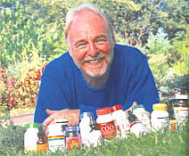
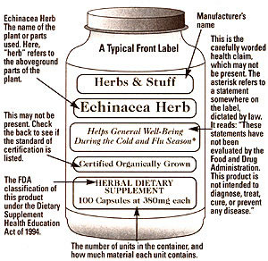
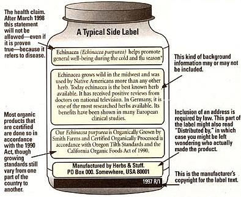
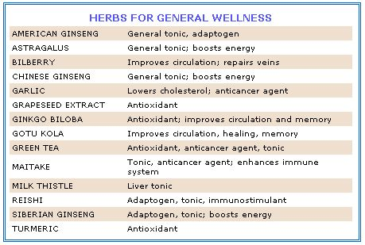
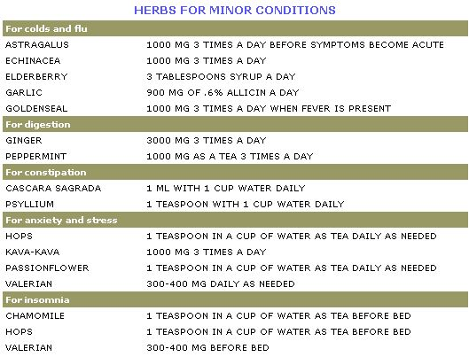
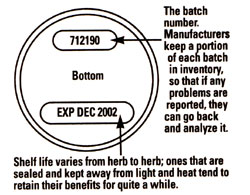
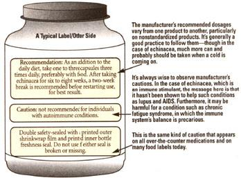

What The Labels Don't Tell Us
By Logan Chamberlain, Ph.D.
December/January 1998
NATURAL HEALTH
Holiday stress. Winter colds. New Year's resolutions to eat better and live a healthier life. There are a thousand reasons to turn to natural remedies for a host of complaints at this time of the year. But be forewarned: you're going to find a dizzying variety of herb and supplement products at your pharmacy or local health food store. Just trying to decide which one to buy can cause confusion, irritability, and mental fatigue - possibly some of the same symptoms that brought you to the store in the first place!
The recent resurgence of herbal medicine is both blessing and curse. We're fortunate to have so many potent natural remedies easily available; their number grows daily. But we're unfortunate not to have easy access to information that will help us make the right choices. Which herb is best, say, for a sinus infection? Federal laws prevent manufacturers from providing straightforward dosage/benefit statements on their product labels, so you have to somehow figure out what to do yourself. Once you determine the herb you need, should you use capsules or tablets, liquid tinctures or extracts, or a tea? Should you look for the herb by itself or in combination with other herbs? How much should you take and for how long? Is there any danger in taking herbs with other medications? Is one brand or herbal preparation better than another? If three or four different brands or varieties of an herb are available, how do you choose?
Unless you read a lot of books or magazines on the subject, or get recommendations from a knowledgeable friend (or, better yet, from a trained herbalist), you'll just have to do your best at deciphering the fine print on the product labels.
Decoding the Product Labels
In thinking about how to explain the intricacies of herb labeling, I went to my local health food store and selected every echinacea product available in capsule form - seven products in all. Echinacea is one of the most popular herbs, so I thought it would make a useful example. Looking at the variations in content, information, terminology, manufacturing processes, claims, and dosages made me appreciate anew how confusing the world of herbal supplements has become. Here's what I found:
Three products were Echinacea angustifolia, two were E. purpurea, and two mixed both species. (Most research has been conducted on E. purpurea, though that doesn't prove it's better.)
Two products were made from aboveground plant parts, also designated "herb" (stems, leaves, and perhaps flowers), two were made from roots and/or rhizomes, two were made from herb and root, and one was made from juice pressed from the flowering plant.
Two products were standardized extracts, the other five were not.
Four products were Certified Organically Grown, three were not.
Six of the seven products bore batch numbers for quality control.
Three products had "use by" dates.
All the products had safety seals; two were packaged in brown glass bottles and the remainder in recyclable plastic.
One product employed cellulose capsules for vegetarians, and the remainder employed gelatin capsules.
Capsule sizes were around 200 mg each for the standardized products, and 380 mg to 450 mg for whole-plant products.
Prices for whole-plant products were $8.29, $10.49, $11.98, $15.98, and $18.95 for 100 capsules. For standardized extracts, prices were $20.95 and $21.95 for 60 capsules.
Recommended dosages ranged from one or two capsules a day at the low end, to two to three capsules two or three times daily at the high end. Four products recommended discontinuing use for two weeks after taking the herb for six to eight weeks; the others bore no such instructions.
One label cautioned against use by people with autoimmune conditions, and one advised caution for pregnant women and nursing mothers.
Some products were labeled sugarfree, one was "made with love." One was "cryogenically ground" (whatever that means!), others were harvested from the wild. In other words, these products were very inconsistent, and there was no easy way to choose among them. Reading the health claims was even more confusing. Here's what some of the labels said (some products made no health claims at all).
"Echinacea ( Echinacea purpurea ) helps promote general well-being during the cold and flu season."
"Well researched in Europe, this herbal supplement is commonly used to promote well-being during the cold and flu season."
"Nutritionally supports healthy immune function."
"Echinacea is a popular herb, especially during the cold season."
In each case, an asterisk refers to the following statement at the bottom of the label, one that is dictated by law: "These statements have not been evaluated by the Food and Drug Administration. This product is not intended to diagnose, treat, cure, or prevent any disease."
In fact, there's a great deal of solid research on the effectiveness of echinacea. German studies have shown that, when taken at the onset of colds or flu, it boosts the immune system by enhancing the activity of white blood cells, that during such times, it's wise to take as much as 1,000 mg three times a day, and that, after taking it for two weeks, it's best to discontinue use for a few days. Too bad our current laws don't allow manufacturers to say so.
Beginning in March 1998, all new products had to not only avoid making claims about curing disease, they could not mention any disease in relation to the product - including the name. This meant no more tricky product names such as "ArthriCure" or "Cold-B-Gone." And after March 1999, all existing products whose names include a disease condition must be renamed and all nutritional information must be included on the label. If credible research exists, the FDA may not prohibit the manufacturer from making reasonable claims, so long as the claims are stated in terms of structure and function rather than curing disease. For example, a product label for ginkgo can say, "Increases microcirculation to the brain." It cannot say, "Cures Alzheimer disease" or "Cures tinnitus." A product label for hawthorn can say, "Promotes heart health." It cannot say, "Cures angina pectoris." (See label description on page 31.)
Why are the labels so confusing? They could have been worse. One of the strongest grass-roots campaigns in the history of this country resulted in the Dietary Supplement Health and Education Act (DSHEA) of 1994. The government was faced, on the one hand, with a U.S. Food and Drug Administration (FDA) initiative to control and limit consumer access to such dietary supplements as herbs and vitamins, and, on the other hand, with a public outcry against such limitations. During the months that this issue was being considered, congressmen received more mail from concerned constituents than they had received on any issue in history except for the Vietnam War.
The resulting act bowed to the will of the people in that it allows the unrestricted sale of herbs, vitamins, minerals, and other substances such as hormones and amino acids - so long as medical claims are not made for these products by their manufacturers. Manufacturers can allude to the possible usefulness of an herb and consumers have to make personal judgments - based on research, reading, or hope - to decide which herb to use.
REAP THE ANTIOXIDANT POWERS OF HERBS AND SPICES
By Marguerite Lamb
In recent years, we've been hearing a whole lot about antioxidants, chemicals that neutralize harmful free radicals in our bodies. Free radicals are highly charged oxygen molecules (having either one too many or too few electrons) that are formed mainly as a natural byproduct of breathing, but also from exposure to food additives and pesticides, UV light, cigarette smoke, exhaust fumes, and chemical pollutants.
Not satisfied in their unstable state, free radicals roam the body, stealing mates for their unpaired electrons from unsuspecting cells. These biomolecular bandits have so far been linked to dozens of illnesses, including cancer, arteriosclerosis, and arthritis, as well as to premature aging.
Widely touted as "fountains of youth," antioxidants provide the best defense against these scavengers - either by blocking their production or by serving as biochemical kamikazes, allowing themselves to be ransacked by free radicals in place of healthy cells.
Vitamins A, C, and E, along with beta carotene (a precursor to vitamin A), are the best-known antioxidants. But none of these make their way often enough (and in sufficient quantities) into the Western diet, which tends to be heavy on fats and carbs and low on antioxidant-rich fruits, veggies, nuts, and seeds. Indeed, it is estimated that less than 10% of Americans regularly consume five fruits or vegetables daily, the National Cancer Institute's recommended minimum. Of course, supplements are always an option, and in recent years both C and E have become bestsellers for vitamin retailers nationwide. (Vitamin A can be harmful in very high doses, and so folks tend to steer clear of this one in supplement form.)
But for those who prefer to get their nutrition out of the ground rather than out of a plastic bottle, there's good news: the latest antioxidant research is pointing to other natural sources that - with a sprinkle here and a dash there - can easily be incorporated into the American diet. We're talking here about herbs and spices.
"One way to see herbs is as compact sources of the nutrients present in foods, with relatively little of the space-consuming water and calorie content," says Lorilee Schoenbeck, N.D., a naturopathic physician in private practice at the Champlain Center for Natural Medicine in Shelburne, Vermont. "When you look at herbs as highly concentrated foods," she adds, "then it is not surprising that, ounce-for-ounce, herbs often contain much higher concentrations of given nutrients or chemical compounds. Frequently, though not always, antioxidants are among these."
Their compact nature alone may give herbs and spices an advantage over vitamin E, since most natural sources of this important nutrient (plant oils, nuts, etc.) will add inches to your waist faster than they'll replenish your antioxidant arsenal.
Medical botanist Jim Duke, Ph.D., among the world's foremost authorities on healing plants, recommends leafy herbs in particular as potent sources of antioxidants. "Green leaves in general are richer in antioxidants than other plant parts, because that's where the oxygen is produced," he says. Retired since 1995 from the United States Department of Agriculture, he continues to maintain that agency's phytochemical database ( www.arsgrin.gov/duke/ ). "You can go to my database and ask how many, and how much, of each antioxidant compound there are in some 3,000 herbs," says Duke, who is also the author of The Green Pharmacy (Rodale Press, 1997), a handy guide to plant-based remedies.
In Green Pharmacy, Duke advises drinking two antioxidant teas a day as part of a broader fit-for-life plan. Some herbs suitable for steeping are oregano, rosemary, bee balm, lemon balm, peppermint, sage, spearmint, savory, and thyme, all of which have been shown to contain significant levels of antioxidants.
These and other antioxidant-packed herbs and spices can also be sprinkled in salads or used to flavor your favorite vegetable, pasta, or meat dishes. Many can be found dried, crushed, and packaged at the local grocery. But, as with fruits and vegetables, fresh-from-the-garden herbs and spices are optimal, says Beverly Yates, N.D., of the Center for Natural Health Care in Portland, Oregon. "Ideally, people should consume freshly picked herbs and spices, preferably grown in their own gardens so they know exactly what the growing conditions are."
But while fresh may be best, it takes effort and patience to grow your own. The nutritional supplement makers know (and are banking on) this, and as word spreads about the antioxidant powers of herbs and spices, more and more are showing up on store shelves in pill form. But are supplements a good way to get your herbs? "I agree with the conservative nutritionists and AMA physicians that the best way to get [antioxidants] is through a balanced diet," says Duke. "But how many Americans take time for a balanced diet? Better they pop the antioxidant pill than do without."
For Schoenbeck, whether or not a person should take antioxidant herbal supplements depends on that person's overall health picture. A 30-year-old nonsmoking vegetarian who shops organic, exercises regularly, lives in a rural area, and has no family history of heart disease, cancer, or any of the other major diseases associated with freeradical damage can properly skip the supplements, she says. But the 45-year-old city dweller who smokes, eats processed foods, or has a strong family history of one of the aforementioned diseases, should take his antioxidants any way he can get them.
Still, Schoenbeck warns, antioxidants are no elixir. "Here in Western society, it seems we're always looking for the fountain of youth - and the magic bullet that will provide it," she says. "Antioxidants have existed as long as food has. They have been quietly exerting their anti-aging effects on the people who consume healthy foods for generations. Our current preoccupation with them as 'miracle cures' speaks more to how far we, as a society, have gotten away from eating healthy food and living in nontoxic environments than it does to their ability to prevent every disease imaginable."
"Sometimes," adds Yates, "you see people smoking heavily, no exercise, fast food all day, and so on, eating handfuls of antioxidants of various kinds, thinking that they are being healthy and that the little natural pills will undo the rest of their unhealthful, harmful habits. It's like putting a Band-Aid on a hemorrhage; it is simply not enough in those cases." (For more on antioxidants, see page 36.)
How Do You Choose?
Since there are so many options available, and such a lack of clear information on the packaging, I'll continue with the example of the seven different echinacea products I examined to let you see how I would pick what I think is the best product out of the lot.
(1) I'd decide if I want a whole-plant product or a standardized extract. Let's say I choose whole-plant products because of the potential synergy among their various compounds.
(2) I'd look for a product made from the echinacea root rather than the aboveground parts, because I feel the root has higher concentrations of useful components (this is not necessarily true for other herbs). Roots are also less likely to be adulterated with other plants that look the same when dried. Products made from echinacea root tend to be more expensive, though, because the plant has to grow for four years to develop a harvestable root. Taking the root destroys the plant.
(3) I'd prefer a product made from E. purpurea to one made from E. angustifolia, simply because most of the research has been done on the former.
(4) I would want an organically grown product, because I'm concerned about pesticides - both for my own health and that of the environment. (If the herb I'm buying is endangered in the wild, as goldenseal is, I would try to choose a product that was cultivated, not wildcrafted.)
(5) Even though I'm a vegetarian and prefer capsules made from cellulose to ones made from animal-derived gelatin, this wouldn't determine my choice, because only one product had cellulose capsules.
Of the seven echinacea products I looked at, two almost fit my requirements. One was made from organically-grown herb and root of E. purpurea, but there's no way of knowing how much herb and how much root. One was made of organic root of E. angustifolia. For the same number of capsules, one cost $8.29, the other $15.98. So it would come down to weighing the value of my species of choice, amount of root, and price. What would you do?
If I had preferred a standardized extract, the choice would be less complicated. The reasons for choosing one might be product purity (the extracting process eliminates bacteria, fungi, and a variety of other contaminants), consistency (I would know just how much of one of the major active ingredients each capsule contains), and convenience (I wouldn't need to take as many pills per day). Of the products I looked at, two were standardized to 4% echinacosides. Both were made from E. angustfolia (not my species of choice). They cost about the same ($20.95 and $21.95). My scientific conclusion: flip a coin.
Okay, I'll confess. What I would really do is choose a tincture, not a capsule, form of supplement. It would taste awful, but I feel that it would be faster-acting. I've never minded if medicines tasted terrible, as long as they went down quickly.
What Form of Herb Should You Use?
Not only are hundreds of different herbs available in the marketplace, they come in a bewildering variety of forms. Should you buy a tea, a tincture, or a capsule? Which is better, or does it matter? Understanding the different preparations and how they're made will help you make informed choices. (If I seem to be emphasizing capsules in this discussion, it's because that's the form in which 80% of all herbal supplements are sold. This is not necessarily because they are better.)
Let's look once again at our echinacea example. It can be prepared in any of the following ways, and these do not exhaust all of the possibilities.
Harvest and dry all above-ground parts (stems, leaves, flowers), grind and sift, then form into tablets or capsules.
Harvest and dry the roots, grind and sift, then form into tablets or capsules.
Harvest flowering plants and press the juices from them while they're fresh. This form of echinacea was used in a positive test conducted by the German Commission E, a regulatory agency responsible for approving herbal medicines in that country.
Grind, crush, and mill the root, soak it in alcohol to dissolve some or all of the active ingredients, strain, and use the liquid. (Water or glycerine may be substituted for alcohol, but the resulting product may not have the same kind or amount of active ingredients.)
Grind, crush, and mill the root or whole plant, treat with a solvent such as acetone or ketone, which will bind with some of the chemical compounds in the plant material. Wash out the unbonded solvent and form the remaining substance into capsules or tablets.
All these processes result in products with some active ingredients that can stimulate the immune system against colds and flu. But which is better? Is there really any way to know? One of the biggest controversies among herbalists and medicinal manufacturers is whether preparations made from whole herbs are superior to extracts, and whether wholeherb extracts are superior to standardized ones.
Those who advocate whole-herb preparations argue that there are many, many compounds in any given herb, and that they act synergistically to provide the maximum benefit to the user. Those who advocate standardized extracts argue that without a rigorous process of concentrating and measuring one or more compounds in the product, you don't really know what you're getting. Both of them are right.
Whole Herb vs. Extract?
The concentration of medicinal compounds in herbs varies. For instance, a teaspoon of dried peppermint leaves is powerful enough to make a tea that's very effective in calming an upset stomach. But a tea made from a teaspoon of ginkgo leaves would have no value at all in restoring your memory. It takes many, many pounds of ginkgo leaves to make a single effective dose (and the doses must be repeated regularly over time). So how do you know if the ginkgo product you've just bought is concentrated enough to do any good? The manufacturer probably has standardized it. For ginkgo, standardization means that a product contains approximately 24% glycosides. However, most herbs that are standardized don't require the concentration that ginkgo does and are frequently standardized for other reasons, often for the manufacturer's research purposes.
Other Forms of Herbs
Tea . This is the most familiar, most traditional herbal preparation. What you buy is dried plant material - leaf, flower, bark, root, seed, berry. What you do with it is use hot water to extract some of the material's active components. Some herbs, such as peppermint, chamomlle, and sage, lend themselves very well to this process. Others - ginkgo leaf, for example - could be boiled all day and not yield anything useful. Hard or woody plant parts need longer steeping or soaking to make an effective tea.
Tincture . The active compounds in some herbs are not water soluble, so they are steeped in alcohol instead, the result being a simple extract. Tinctures are sometimes called extracts or liquid extracts. They are taken in small amounts - droppersful or teaspoonsful - mixed with water. If you can't tolerate alcohol, some herbs are extractable into other liquids, such as glycerine.
Tablet . A controlled quantity of finely milled herbal material is compressed into shape and given a thin coating.
Tonic Herbs
Look up "tonic" in the dictionary, and you'll see synonyms such as restorative, invigorant, stimulant, booster, refresher. The best known tonic herb in the Western world is probably ginseng. It's also been one of the most controversial, because it has a long history of use, but no one has been able to prove precisely what it does. That's because its action is nonspecific. It doesn't cure any particular disease in any measurable way. But it does enhance energy and general health, improve concentration and sensory discrimination, and subtly regulate a range of body functions - metabolism, blood pressure, oxygen uptake, and more. It sounds miraculous, doesn't it?
And there are other herbs that have the same benefits - Siberian ginseng ( eleuthero ), mushrooms such as maitake and reishi, and gotu kola, to name a few. You might see these also referred to as adaptogens, which means that they build resistance to physical stress by strengthening the immune, nervous, and/or glandular systems. Sure, you can be a healthy vigorous individual without taking them, but why not optimize your odds?
Other Preventives
There are other herbs that have good, general preventive effects that don't fit neatly into any of the categories above. They do, however, have specific effects on certain body systems, either as preventives or curatives. These include the herbs that I take every day - ginkgo biloba for brain function, bilberry for eyesight, milk thistle for the liver, and garlic for high blood pressure and cholesterol.
One final thought: using herbs for serious health problems instead of going to a qualified health practitioner - whether a trained herbalist or a medical doctor - is not what I advocate. For any serious disease, get the help of experts; don't try to treat yourself. But you can foster your own good health and resistance to disease in a conservative, responsible way. I think of herbs as a nutritional insurance policy.
Need More Information?
What the Labels Won't Tell You (Interweave Press, 1998), Logan Chamberlain's indepth analysis of how to choose and take herbal supplements, is available for $9.95 from MOTHER's Bookshelf. Call 800-888-9098 and ask for book number MEB265.
Herbs and Spices That Add More Than Flavor
Many dozens of herbs and spices are known to contain antioxidant compounds. Below is a list of just some of the more potent ones. For advice on which to take and in what amounts, consult a trained herbalist, naturopathic physician, nutritionist, or M.D. As a rule, pregnant women should consult their obstetricians before taking any herbs. - Marguerite Lamb
BILBERRY: Compounds called anthocyanosides give bilberries their antioxidant punch; this berry and its relatives blueberry, cranberry, and huckleberry, can aid in protecting the eyes in particular from free-radical damage.
SAGE: Another powerful antioxidant, but not to be overdone. According to medical botanist Jim Duke, this spice contains a fair amount of thujone, a compound that can cause convulsions if consumed in large quantities.
GARLIC: Yes, this blood-pressure-lowering, bad-cholesterol-busting bulb is also a potent source of antioxidants.
GINGER: This age-old nausea remedy contains the antioxidant zingerone, which, according to naturopathic physician Lorilee Schoenbeck, "protects against oxidative damage to fats." Mince a few slices of fresh ginger root and add to your favorite stir-fry.
ST JOHN'S WORT (Hypericum): This mood-booster is also a good source of antioxidants. "If you squeeze one of the little yellow flowers of the St John's wort plant," says Schoenbeck, "a dark red pigment will bleed from the petals. This pigment is the result of Hypericum's very high content of the bioflavenoids rutin, hyperin, quercetin, and quercitrin, all of which act, in part, as antioxidants. With 11.7% of its content in bioflavenoids, Hypericum is one of the most concentrated herb sources of antioxidants."
ROSEMARY: Studies have shown this herb to be a powerhouse, endowed with the potent antioxidant rosmarinic acid, plus about a dozen other free-radical-zapping compounds. Use as a spice or in tea to help ward off cancers, heart disease, and the effects of aging.
TURMERIC: Much has been written about the mighty antioxidant powers of this bright orange-yellow Indian spice (which are due largely to a compound called curcumin). Says Beverly Yates, N.D., "Turmeric is a potent antioxidant and anti-inflammatory, used clinically to treat inflammatory conditions like arthritis, muscle sprains and strains, and swelling due to injury and trauma of all sorts, including surgery recovery and accidents." Research also suggests that turmeric may help to ward off certain kinds of cancers, while promoting vascular health.
MILK THISTLE: This herb has proven effective as a general liver tonic and specifically as a liver detoxifier.
PEPPERMINT: Long heralded for its abilities to calm distressed digestive tracts, this herb is now also earning a reputation as a powerful antioxidant
GREEN TEA: Green tea is chockful of polyphenols, compounds that, Schoenbeck notes, "have antioxidant capabilities greater than vitamin C and E." Green tea has been linked to the prevention of stomach, colon, pancreatic, lung, and breast cancer.
PURSLANE: Jim Duke gives this potherb/salad green high marks, describing it in his Green Pharmacy (Rodale Press, 1997) as "exceptionally rich in antioxidants," especially vitamins A, C, and E, as well as a compound known as glutathione, an immune-system booster.
GRAPE SEED EXTRACT: "Grape seed extract blurs the line between nutritional supplement and herb," says Schoenbeck, noting that its been found "at least 50 times more effective than vitamins C and E as an antioxidant." It's available in supplement form.
OREGANO: Like rosemary, this traditional Italian spice brings the added benefit of rosmarinic acid and more than a dozen other antioxidants.
|
 PHOTOS: ROBIN THOMAS Logan Chamberlain in the National Herb Garden at Washington, D.C.'s National Arboretum. |
 PHOTOS: ROBIN THOMAS PEPPERMINT |
 PHOTOS: ROBIN THOMAS PURSLANE |
 PHOTOS: ROBIN THOMAS OREGANO |
 |
|
 |
 |
 |
 |
 |
 |
 |
 |
 |
|
 |
 |
 |
|
 |
 |
 |
 |
 |
 |